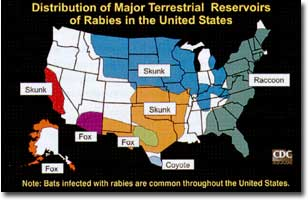

Issue #205 - August/September 2004
RABIES
Rabies is a preventable viral disease that affects the central nervous systems of humans and other mammals. According to Linda J. Demma, an epidemiologist with the Centers for Disease Control and Prevention (CDC), public health costs associated with rabies prevention and treatment exceed $300 million a year, “so the disease is still a common concern.”
People and animals get the rabies virus from the bite of an animal infected with the disease. In the United States, the most common hosts are wild skunks, raccoons, bats, foxes and coyotes. Domesticated mammals also can get rabies, especially nonvaccinated cats and dogs.
In humans, most potential rabies exposures are caused by bites from domesticated animals, simply because people have less contact with wild animals. But, almost all cases of human deaths from rabies reported to the CDC in the past 23 years have been caused by bites from bats: From 1980 to 2003, 30 of 34 human deaths from rabies were associated with bats, Demma says. In only three of those cases, the patients reported a known bite. Most victims didn’t realize they had been bitten (a bat’s teeth are very small and bite marks can go unnoticed). To reduce your exposure to bats, seal off openings in your home larger than a quarter-inch by half-inch, through which bats can enter. Check with your physician when bitten by a bat or any other animal.
SYMPTOMS AND TREATMENT
Symptoms of rabies, which appear within two to eight weeks after the bite, include fever, headache and general discomfort. Severe symptoms occur in the following two to 10 days and include insomnia, anxiety, confusion, slight or partial paralysis, difficulty swallowing, overly excited behavior, hallucinations, agitation, salivation and fear of water. Death usually occurs within days of the onset of the severe symptoms.
There are two types of vaccine against rabies - given before a bite (pre-exposure), or just after exposure (post-exposure). The CDC advises people who are at a higher risk of contracting rabies, such as veterinarians or animal handlers, to undergo pre-exposure treatment. It does not eliminate the need for post-exposure shots but can simplify treatment if the person is bitten. The number of human deaths from rabies has declined from more than 100 per year at the turn of the 20th century to one or two per year. The number of rabies cases in domestic animals also has decreased, from 4,000 in 1955 to less than 1,000 in 2000.
If an animal bites you, wash with soap and water and do not delay in seeking medical attention, Demma says. Call animal control or a wildlife conservation agency for assistance with capturing the animal. If professional assistance is unavailable, use precautions to catch the animal safely and submit it for testing to local authorities.
If the domestic cat or dog that bit you has up-to-date vaccinations, you may not need post-exposure treatment. You only need post-exposure treatment if the dog or cat shows rabies symptoms within 10 days.
PROTECT YOUR PETS
Your best bet for avoiding health - and legal - complications with rabies is to keep your pets’ vaccinations up-to-date. Rabies laws vary from state to state, but most states require that you vaccinate pets after they are 3 months old, even outdoor cats, and keep their boosters up-to-date. According to Nancy Peterson at The Humane Society of the United States, despite concerns that we may be overvaccinating our pets, rabies is a special case because it has human health concerns. “Follow your municipality’s laws and keep all your pets vaccinated,” she says.
After biting a human, even a healthy pet that is up-to-date on vaccinations must, by law, be quarantined for 10 days and observed for signs of rabies. This can often be done at home.
If a pet is bitten by a wild animal and the pet hasn’t received the rabies vaccine, it should be euthanized immediately or placed in strict quarantine, according to the CDC. Veterinarians consider animals with expired vaccinations on a case-by-case basis; your unvaccinated pet could be placed in isolation for six months and then released one month after a vaccination. Pets with up-to-date vaccinations are kept under observation for 45 days after being bitten by a wild animal. Boarding costs alone can be considerable in any of these circumstances.
TETANUS
Also known as lockjaw, tetanus is a serious and potentially fatal disease caused by a neurotoxin produced by the Clostridium tetani bacteria. Early symptoms include stiffness in the jaw, neck and abdomen, and difficulty swallowing. If left untreated, it can cause a fever, higher blood pressure, respiratory failure and severe muscle spasms. Tetanus is not contagious from person to person. About 18 percent of people who contract the disease die, especially people over the age of 60. For the other 82 percent, treatment can be long and hard, and usually requires hospitalization.
From 1947 to 2002, annual tetanus deaths in the nation dropped from 560 to 25. Most of these cases occurred in people who had not been vaccinated or had not received a booster in the preceding 10 years.
HOW YOU GET IT
C. tetani spores usually enter the body of a person or an animal via a break in the skin. The bacterium cannot survive in the presence of oxygen, so puncture wounds create an ideal environment for tetanus bacteria because the inside of the wound is hard to clean and is not exposed to air. The most common punctures come from stepping on a nail, but other culprits include barbed wire, splinters, animal or insect bites, self-piercing and self-performed tattoos. Simple cuts and scrapes, if not properly cleaned, also can lead to a tetanus infection.
The spores - vegetative, resting stages - of C. tetani, in contrast to the bacterium itself, are resistant to heat and antiseptics, and are widely found in soil and in the intestines and feces of horses, sheep, cattle, chickens, dogs, cats, rats and guinea pigs. Fresh and composted manure-treated soil may contain higher levels of tetanus-causing bacteria. For this reason, and because of the nature of their work, farmers and homesteaders are at a higher risk of contracting tetanus than others.
SYMPTOMS AND TREATMENT
Symptoms of tetanus normally appear about eight days after the bacterium enters the body, but can take anywhere from three to 21 days. In general, the further the injury is from the brain and the spinal cord (your central nervous system), the longer it takes to experience any symptoms. The incubation periods and the severity of symptoms are related to how much toxin is in the wound, and to the person’s level of protective immunity against the toxin.
Vaccination is the best way to diminish your risk of contracting tetanus. Two types of vaccines are available, depending on your age. For children younger than 7 years old, a vaccine called DTaP (diphtheria, tetanus toxoids and acellular pertussis) protects against three diseases: diphtheria, tetanus and pertussis (whooping cough). Tetanus/diphtheria (Td) boosters are given to children 11 years and older and to adults every 10 years.
According to Dr. Marty Roper, a medical epidemiologist with the CDC’s National Immunization Program, routine boosters are important, because tetanus is ubiquitous in the environment and immunity provided by vaccination wanes over time. Only 30 percent of people 70 or older in the United States have immunity to the disease. “Adults, especially young adults, tend not to think about immunization,” Roper says. “That is why tetanus occurs mostly in adults in the United States.”
|
Susceptible puncture wounds , such as those from stepping on nails, are the leading cause of tetanus. |
 |
|